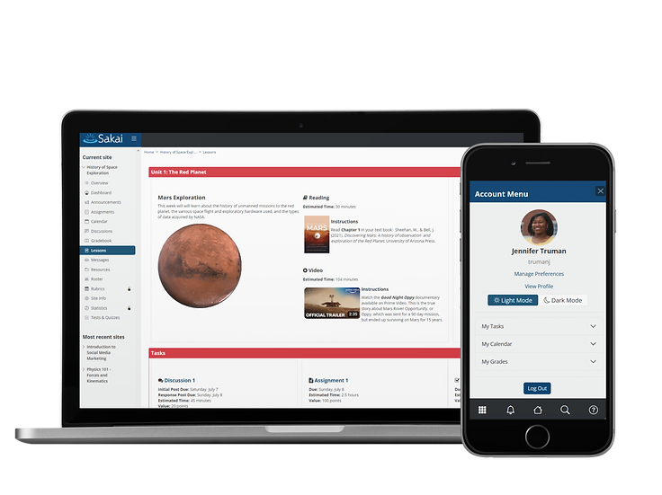

Great For Learning
Sakai LMS helps instructors create
truly inspiring learning experiences.
Teachers and students love Sakai.
Sakai innovates constantly,
using its market leadership
to advance education technology.

Created by Educators for Educators
Faculty members and teachers work tirelessly to teach their students, whether it's in person or online.
Sakai's greatest strength is that it is fully open source and is created by—and for—educators. We innovate based on teacher needs and provide both students and faculty with the best learning experience in-person or online.
MEANINGFUL LEARNING
“Sakai is feature-rich and robust. You can build a truly meaningful learning experience within Sakai that I have not seen in other LMS systems.”
Julianne Morgan, University of Dayton
FACULTY AND STUDENTS FIRST
“I love that colleges and universities shape the evolution of Sakai. We all have a voice in the product roadmap and collaborate to meet the needs of our instructors and students. Education, not profit, is the top priority of Sakai
Alan Regan, Pepperdine University
PARTICIPATORY
“The Sakai community encourages institutions and individuals to influence the product’s features, strategy, and development in a very tangible way. That is truly a breath of fresh air, and not often seen with commercial LMS vendors.”
Dr. Wilma Hodges, Sakai Community Manager
BEST FOR PRIVACY
“Because Sakai is open source, you can maintain control, possession, and ownership of your student data over the long term.”
Dr. Charles Severance, Sakai Founding Architect
Sakai's Exceptional Features
Sakai features robust communication options and group-aware tools that make keeping in touch and working together easier. Users can choose from a variety of synchronous and asynchronous tools for messaging, discussions, social connections, and collaborative work.
EASY INTEGRATION WITH THIRD PARTY APPS
Sakai is a leader in the development and implementation of the IMS LTI specification. In addition, Sakai has an extensive API which facilitates the development of deep, native integrations with third party applications.
COMMUNITY EDUCATOR-BUILT TOOLS
Sakai is 100% open source. Sakai community members develop Sakai-specific tools and then release them for others to use outside of the packaged Sakai release. You can even build your own if you like!
SUPERLATIVE COURSE CREATION
Building your course has never been easier! Sakai lets you create and organize text, resources, quizzes, tests, assignments, links, video, and other media into lessons or modules; control access to materials via conditional release; upload, store, and share files and other resources; and much more.
ROBUST COMMUNICATIONS OPTIONS
The Secret to Sakai's Leadership:
Our Open-Source Community
Sakai is 100% Open-Source, so you never have to worry that it will be acquired and altered.
The community oversees, directs, manages, and advances Sakai together.
Commercial affiliates develop, host, and support Sakai. Longsight, Learning Experiences, and EDF are the
main affiliates.